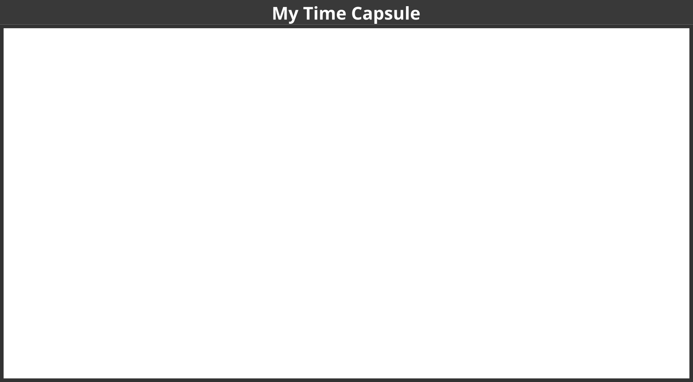

lernOS is a self-management method for people living and working in the 21st century. To be successful today you have to learn, organize, and develop yourself on an ongoing basis. Nobody else is responsible for that process. You have to care for it on your own (self-directed lifelong learning).
If you decide to start with lernOS I suggest that you find 3-4 other people and become a peer support group called a lernOS Circle. Let this document guide you to a 13 week experience called a lernOS Sprint. Do a retrospective after the sprint and decide if you want to go on with another one. This can be with the same circle members or with new ones.
If you need support to find circle members you can ask your friends and network or use the free Circlefinder App. If you have any further questions you can join the lernOS User Group on Telegram or write with the hashtag #lernOS on Twitter.
The adoption of lernOS is a matter of months or years not hours or days. So Keep Calm & Learn On!
@simondueckert
lernOS is inspired by a multitude of sources and thought leaders and is thus standing on the shoulders of giants. An overview of the inspirations I have compiled in the Lernos Wiki under Roots&Inspirations. I would like to express my special thanks to these key people and organisations: Prof. Herbert Stoyan, Prof. Michael Müller and Dr. Raymond Bimazubute for the creation of the expert debriefing method at the end of the 1990s, which today forms the core of our approach to personal knowledge management (PKM). David Allen for the method Getting Things Done (GTD), the key to personal productivity. Oliver Gassner who introduced me to GTD Barcamp Nuremberg 2006. Mike Williams and Mark Wallace, who have extended GTD for teenagers. Andy Grove for the development of the method Objective & Key Results (OKR) as a further development of Peter Drucker's management by objectives (MbO) at Intel in the 1980s. John Doer for bringing OKR to Google and Rick Klau from Google Ventures for his talk How Google sets goals: OKRs. The OKR Forum for the many events in Germany that make OKR accessible to a wide audience. Dave Viner For Narrating Your Work (2009), Brian Tull & Joe Crumpler for Patterns of Observable Work (2010) and Bryce Williams, who in his blog 2010 created the definition of “Working Out Loud = Observable Work + Narrating Your Work”. Sheryl Sandberg who created with the LeanIn Circle the blueprint for the WOL Circle. John Stepper for the design of the 12-week WOL learning program and the publication of the WOL Guides. Alex Osterwalder for creating the Business Model Canvas in 2010. Barbara Schmidt as guest in my first Podcast on WOL (2015). Katharina Krentz from Bosch for her many contributions to make WOL usable in companies. Jochen Adler for the launch of the German-speaking WOL community at the beginning of 2015. All participants of the founding meeting of this community at 8th of June 2015 (Babara Koch, Barbara Schmidt, Cornelia Heinke, David Hirsch, Dirk Toetz, Joachim Haydecker, Katharina Packer, Norbert Lind, Peter Schütt, Ragnar Heil, Stephanie Streib, Tim Mikša, Thomas Olsen), who contributed important experiences and insights at this early stage. The Working Out Loud Community of Practice consisting of large German companies that contribute a lot to spread WOL in Germany. The organizers and speakers of the Working Out Loud Camp 2017 around Sabine Kluge, Melanie Raßloff, Lukas Fütterer, Barbara Schmidt, Katharina Krentz, Petra Hock, Jasper-John Wendenburg, Sebastian Hollmann, Ilona Libal, Harald Schirmer, Claudia Mayer, Judith Braun and Andreas Schorn. Julia Weber for the presentation of the approach Working Out Loud for Leader as a reverse mentoring method at KnowTouch 2018. Harald Schirmer, Karlheinz Pape, Antje Röwe and Winfried Felser for participating in the open WOL Circle 2017 as part of the Corporate Learning MOOCathon. Nadine Schäffer and Rainer Bartl the moderators of the WOL community on Xing. Magnus Rode for the operation of the open WOL Wiki. Martin Lindner as a sparring partner to make lernOS accessible to a broader audience via adult education centres. Karl Damke for the first lernOS sketchnote. Leonid Lezner and Till Moritz as participants of the first pilot circle based on the alpha version of the lernOS Guide. And of course the many others who support the movement and whom I have forgotten here.
We are facing enormous challenges driven by globalization, digitization, and a fast rate of technological and scientific progress. At the same time those changes provide us with a lot of new opportunities for development. The future is uncertain and we cannot predict it. So we need to be open and ready for it (Source: Learning Framework 2030).
To navigate through the so called VUCA world of the 21st century full of volatility, uncertainty, complexity, and ambiguity teenagers, students, professionals, managers, and leaders have to upskill themselves. Everybody has to develop skills like creativity, critical thinking, communication, and collaboration. Digital literacy is important to be able to use digital tools productively. The personal motivation for development should be more than getting a well-paid job or making profit. Everybody should care about the well-being of himself, his friend & families, his communities, and the society. We need to learn what knowledge, skills, mindset, attitudes, values, methods, and tools we need to design and shape a better future together.
lernOS can help you to get fit for the 21st century. lernOS is an operating system for livelong learning and learning organizations. The phrase “mi lernos” means “I will learn” in Esperanto. lernOS helps to organize the daily, weekly, and monthly activities and to learn consciously from every action. It will also promote networking with other people so you don’t have to reinvent every wheel and repeat every mistake.
And the best thing is: lernOS is free, open, and easy to understand. Start using it today!
Mastering the VUCA world of the 21st century requires to be open for change and new approaches. There are a lot of tools and methods out there. But when one is not open to give it a try, experiment, and fail there will be no success. Like the people with the “square wheels” in the image below we are often too busy to see new opportunities.
Adopting new practices in life, school, or work is not only about using digital tools. To switch from “square wheels” to “round wheels” the personal attitude, values, and skills have also to be taken into account. lernOS calls these three dimensions mindset, skillset, and toolset. To focus only on some dimensions might help. But for the best results all three should be considered in the personal development process.

The mindset can be described as the attitudes and values that lead to actions and visible results. These values develop over time and form the culture of organizations and society. When we act in the world we get feedback and learn from it. Over time our mind creates mental models of the world and values that guide our future actions (Boisot, 2004). To successfully navigate the VUCA world these five values are important to be successful (Buhse 2014 & Petry, 2014):
There is no ranking in the values above but for some people openness seems to be the core value for a 21st century mindset. It means being open to new experiences, knowledge, and ideas as well as sharing knowledge, ideas, and content openly (see also the Open Definition). You should develop an “open first mindset” over time as described in the Open First Manifesto:

#ProTip: your mindset is not fixed it can grow over time. Watch Carol Dweck’s video on Developing a Growth Mindset to learn more about it.
Since the 1980s skills like solving problems and interacting with others in creative ways became most important to be successful. These are also skills that can’t be easily replaced by automation and artificial intelligence in the future. To get fit for the 21st century you have to train the following skills (Framework for 21st Century Learning, DigiComp 2.1 Framework):

| Skill Area | Skill |
|---|---|
| Creativity and Innovation | Think creatively |
| Work creatively with others | |
| Implement innovations | |
| Critical Thinking And Problem Solving | Identifying needs and technological responses |
| Reason effectively | |
| Make judgments and decisions | |
| Solve technical and non-technical problems | |
| Creatively using technologies to solve problems | |
| Communication | Articulate thoughts and ideas clearly and effectively |
| Listen effectively to decipher meaning | |
| Use communication to inform, instruct, motivate and persuade | |
| Utilize multiple media and technologies | |
| Communicate effectively in diverse environments | |
| Collaboration | Work effectively and respectfully with diverse teams |
| Exercise flexibility and willingness to be helpful in making necessary compromises to accomplish a common goal | |
| Assume shared responsibility for collaborative work, and value the individual contributions | |
| Interacting, engaging, sharing, and collaborating through digital technologies | |
| Managing digital identity | |
| Digital Literacy | Browsing, searching, filtering data, information and digital content |
| Evaluating and managing data, information and digital content | |
| Protecting digital devices, personal data and privacy | |
| Developing, integrating, and re-elaborating digital content | |
| Handling Copyright and licences | |
| Programming, Scripting, and Coding |
#ProTip: the Mozilla Foundation has developed the Web Literacy Framework with a lot of exercises for developing digital literacy and 21st century skills.
With the emergence of Web 2.0 in 2005 social media entered the stage. Not everybody needs to know all the tools but you should have an overview, know the principles, and choose the right tools for yourself. The conversation prism gives a nice overview of web 2.0 platforms available today:

For a beginner 28 categories and dozens of tools might be overwhelming. Therefore the following list provides an overview of the most relevant tools for learnOS:
#ProTip: the lernOS Wiki contains a list with links to all the mentioned tools. There will be tutorials on how to use them in the future.
You have read about the right mindset, skillset, and toolset for the 21st century. Now it is time to practice. You should not practice on your own but in a group of 4-5 people called a lernOS Circle. A circle is a peer support group in which members help each other with feedback, experience, knowledge, and reflection. The lernOS Circle is a circle of trust: what happens in the circle stays in the circle! The circle members will have a weekly meeting with a standard agenda to structure the learning and development process.

The lernOS Weekly is a meeting to track results, practice exercises (called Katas), and motivate each others for the actions ahead. In the circle each member defines personal objectives and desired results. Circle members learn to share, network, build trust and relationships.
lernOS is practiced in timeboxes of 13 weeks called lernOS Sprints. Normally sprints run along the quarters of a year but this rhythm can be changed if necessary. The week 0 is used for the planning of the sprint. From week 1-12 the weekly meeting takes place.

In short this is what happens during a lernOS Sprint:
Week 0 with the Sprint Planning: Does everybody understand the process? When will the weekly meeting be? Will the weekly be face-to-face or virtual? Which tools are used for communication and documentation? Is everybody able to use the tools? Which exercises are chosen for the weeks?
Weeks 1-12 with the Weekly Meeting: the circle members are working on their objectives and desired results during the sprint. They build a network that supports them with achieving their objectives. The two pitstops in week 4 and week 8 help to see if everybody is still on track.
A lernOS Circle meets once a week. Each meeting has a standardized agenda with a check-in, a check-out, and suggested exercises called lernOS Katas (see appendix for the weekly agendas and the exercise descriptions). The timebox for the weekly can be adopted to the needs of the circle members, suggested timeslot is Friday between 11-12am:
#ProTip: Kata is just another term for exercise. It comes from practicing programming skills in a peer learning format. Read more about this format at codekata.com.
The weekly meeting can be face-to-face or virtual. The circle has to define tools for communication and documentation between the weekly meetings. The following table suggests tools that have proven to work in practice:
| Tool A-Z | Communication | Documentation |
|---|---|---|
| Enterprise Social Network (ESN), e.g. IBM Connections, Jive, Yammer |
X | X |
| appear.in | X | |
| X | ||
| Evernote | X | |
| Facebook Group | X | X |
| Facebook Messenger | X | |
| Google Doc | X | |
| Google Hangout | X | |
| GoToMeeting | X | |
| Jitsi | X | |
| Microsoft Teams | X | X |
| Skype | X | |
| Slack | X | |
| Telegram | X | |
| Threema | X | |
| WebEx | X | |
| X | ||
| X | ||
| Zoom | X |
#ProTip: To have a good usability choose a tool that supports communication and documentation, e.g. a Facebook Group or Microsoft Teams. In a Facebook Group you can use the activity stream for communicating and group docs for documentation. In Microsoft Teams you can use the channel “General” for communication and wiki pages or a OneNote Notebook for documentation.
A canvas is a visual structure that can be used to work through several building blocks in a systematic way. This way you use a canvas as a visual checklist. It can also be used to tell a complex story. The idea came from Alex Osterwalder who invented the business model canvas. The lernOS Canvas uses the same basic structure as the business model canvas. But the names of the building blocks have been changed to reflect the topics a circle works on during a sprint.
#ProTip: The lernOS Canvas can be downloaded from the lernOS Website in different formats (e.g. PowerPoint, PDF, PNG). To be able to work with the canvas in an agile way one should NEVER write on a canvas … that’s why sticky notes (e.g. Post-it) were invented!

The header of the canvas contains the creation date, the number of the sprint, and a motivation/mission statement (if you have one). In the building block “My Objectives & Key Results” the goals for the current sprint are documented. The building blocks “My Roles”, “My Activities”, “My Projects”, and “My Knowledge & Skills” can be used to identify potential objectives. “My Relationships” and “My Social Networks” can be used to identify people that can help you to achieve your objectives. Available resources (e.g. documents, checklists, videos etc.) are listed in “My Knowledge Assets”. The repositories listed at “My Repositories” can be used to share assets generously with the network.
#ProTip: all exercises that can be documented in the canvas are indicated by “lernOS Canvas: …” in the exercise description.
#ProTip: if you use the lernOS OneNote Circle Template you can take a photo of the current version of the canvas and upload so the other circle members can see it and give feedback.
If you read through this guide but are not practising yet you should do so NOW! To start with lernOS is really easy. These five steps will help to start smoothly:
Keep Calm & Learn On! :-)
When you are new to the circle you will get to know each other in week 0. You will plan when to meet, which tools to use and who is the moderator is.
Define a circle moderator who cares for event and time management. The moderator is not the “boss” of the circle but just a normal member that cares for smooth operation. Define the day and time of your weekly circle meeting. Define if you meet face-to-face or virtually . Define the tools you use for communication and documentation in the circle. Decide which exercises from the suggested agenda you plan to do in the circle. Also decide if you want to use the lernOS Canvas (see chapter lernOS Canvas) as supporting tool.
#ProTip: in a lot of circles the timebox for running an exercise in the Weekly is too short. You should use the method inverted classroom. Every circle member prepares the exercises as “homework” upfront so you will have more time to discuss results in the circle.
In this week you choose your objectives for the sprint. The objectives might be refined until week 4 but not later. You will also start to think about people who might help you with your objectives (Working alone is addition, working together is multiplication!).
In this week you will reflect on the quantity and quality of the relationships related to your objectives. You will also start to share attention, knowledge, experiences, and assets with your network to build trust and get support.
In this week you will make sure that you have enough time for networking, sharing, and caring for your network. You will do this by making appointments with yourself. You will also think about how to use the intranet oder internet to reach more people.
In this week your objectives should be stable and you should have a clear idea which people in the network might help you to get your things done. Take this week for a short “pitstop” to reflect if everything works well for you and the circle. The next four weeks you will focus to work on the first iteration of your key results.
In this week the work on the first iteration of your key results should have started. The goal is to have a minimum viable product (something that works and that you can show) by the end of week 8. You will also start to think about which facts and personal information might be relevant for your network.
In this week you will look yourself up in the intranet or internet. If your digital twins like website, blog or profile do not match your findings from last week you will go out and update them.
In this week you will work on finishing the first iteration of your minimum viable product. You will also start to envision yourself in the future by writing a letter to your future self. And you will help your network to support you by making your vision and your objectives visible on your online profiles.
In this week the first iteration of your key results should be available. Talk about them and show them in the check-in. When you experienced that you procrastinated to work on your key results you will learn about some “procrastination counter measures”.
In this week you will start working on the second iteration of your key results. In addition you will reflect on your top 10 knowledge assets that you can share in your network.
In this week you will use a checklist of potential resources that can be shared with your network. You will create a time management system that makes sure you have enough time for networking and sharing. And you will learn that sometimes listening is more important then talking.
In this week you will search for groups and communities that are related to your objectives. You will learn to decode the DNA of communities. You will also think about starting an own community to support your objectives.
In this week the final iteration of your key results should be available. Talk about them or show them in the check-in. You will reflect on the circle experience and talk about how to sustain the process. After the weekly you should take some time to celebrate your success!
How do you become a great musician? It’s good to know the theory and to understand the mechanics of your instrument. It also helps if you have talent. But real mastery comes from practicing, applying the theory over and over again, using feedback to get better every time. lernOS uses a catalogue of exercises called “Katas” to train new skills. The agenda for the weekly meeting reference some of the katas to learn new skills step by step from week to week.
Note: the original idea for this great set of exercises came from John Stepper as described in the WOL Circle Guides. Since the WOL guides are published under a Creative Commons Attribution NonCommercial NoDerivatives license (CC BY NC ND) they could not be reused but had to be rewritten for this guide.
What is your motivation for joining this circle? Too often we try to change things by start using new methods and tools but the “Why” is unclear. Simon Sinek explained with his “golden circle” that we should start with the “Why” and then think about the “How” and the “What”.

Exercise (10 minutes):
Complete the sentence: I joined this circle because …
Share your reasons in the circle.
Further Information:
What do you want to accomplish in the next 12 weeks? Pick one or more objectives that you really, really care about and you can make progress towards in the sprint. It can help to use the SMART or FAST criteria for objectives (see below). You can also use Google’s OKR method to get measurable key results (see ProTip).

SMART criteria (by George Doran):
FAST criteria (by The Strategic Agility Project):
Exercise (25 minutes):
Select an objective for the next 12 weeks. Use the questions “Do I really, really care?”, “Can I achieve it in 12 weeks?”, and “Can my network help me?” to test if the objective is appropriate for the sprint. If you have problems to find a good objective think about goals that support your roles, activities, or projects. If you want to help to make the world a better place you can also choose an objective that is related to the United Nation’s 17 sustainable development goals.
#ProTip: Use the principles from objective & key results (OKR) to specify your objective. Define an objective and write it down below. To help you to track progress define 2-4 key results per objective. You should be able to measure the key results on a scale from 0.0-1.0. To make sure to set yourself ambitious goals a completion rate of 0.7 is regarded as a success.
I will (objective): …
as measured by (key results):
Share your objective(s) in the circle (10 minutes).
lernOS Canvas: put objectives in the building block “My Objectives”. You might add further sticky notes for the key results as well.
Further Information:
Most tasks we do have been done by others before. Most of the mistakes we make, have been made in the past already. You can gain access to knowledge and experiences related to your objectives by getting in touch with experienced people inside and outside your organization. Strong relationships are based on trust, sharing, and caring. Dale Carnegie said “You can make more friends in two months by becoming interested in other people than you can in two years by trying to get other people interested in you”. So how do you get in touch with people related to your objectives and develop the relationship?
Exercise (20 minutes):
Create a list of at least ten people related to your objectives. If you don’t know people by name you can also put roles or descriptions on the list (e.g. “best WoW player in wown”, “a good camera man”, “owner of company XY”). Use your contact lists or social networks find more people:
Share your list in the circle and let others help to complete it (10 minutes).
lernOS Canvas: collect people related to your objective in the building block “My Relationships”. You can sort them by priority if you like.
Further Information:
How strong is the relationship to the people related to your objectives? The connection between people in a social network can be defined by the amount of time spent together, the emotional intensity, the level of intimacy and trust, and the reciprocal services. There are three levels interpersonal ties can have:
Exercise (5 minutes):
Take your relationship list and rate every relationship as 1 (absent), 2 (weak), or 3 (strong). Mark the relationships that you want to deepen in the future.
lernOS Canvas: put grades on the sticky notes in section “My Relationships”.
Further Information:
Sharing is caring! In the digital world sharing is often seen as giving others access to files or digital content. But it can also be as simple as sharing your attention with another person by following him, liking his content or subscribing to his website. By sharing you deepen your relationships with every contribution you make.
Exercise (40 minutes):
Go through your relationship list and look for some kind of online presence for each person (e.g. website, blog, profile in social network). Look for possibilities to share some attention. This might be a follow button, a like button, a subscribe field, a five star rating, a comment field or a contact form. Make at least five sharing experiences:
Discuss your sharing experiences in the circle (20 minutes).
lernOS Canvas: if you find people from your relationship list inside a social network list the network in the building block “My Social Networks”.
Do you spend enough time for your personal development and for working on your personal objectives? A lot of people are busy with their daily tasks and do not care enough for their development and their well-being. A good approach is to make an appointment with yourself and reserve that time for yourself in the calendar.
Exercise (15 minutes):
Check your calendar and see when an appointment with yourself fits in. One hour or even 30 minutes a week is a good starting point. Put an appointment with yourself in the calendar. If possible make it a recurring event so taking time for yourself can become a habit. Make at least five appointments:
Discuss your approaches in the circle.
When you interact with individuals you grow your network over time. But when interacting with whole groups or communities you can scale your reach. You become visible to more people and the value of your contributions scale. Examples of such groups are online communities, communities of practice, user groups, discussion forums, and regular meetups.
Exercise (15 minutes):
Search the internet (e.g. LinkedIn Groups, Facebook Groups, Xing Groups, meetup.com, reddit.com) or intranet (e.g. Enterprise Social Network, Social Intranet) to find at least five groups that are related to your objectives:
Discuss the lists of groups in the circle and get more suggestions. Make a small contribution to at least one of the groups afterwards.
lernOS Canvas: use building block “My Social Networks” to list groups or communities related to your objective.
How does it feel if someone uses your ideas or resources and just says “thank you” afterwards? Almost everybody does appreciate this. So it’s a good habit not to take any content or contribution for granted but to be thankful and express your gratitude.
Exercise (15 minutes):
Think of two examples where ideas or knowledge assets from another person helped you to reach your objectives. Create a message (at least one public) to express your thankfulness towards this person. This can be a private e-mail message or a comment in a blog or social profile:
lernOS Canvas: add two people who helped you before to the building block “My Relationships”.
Do you have the same tone when you communicate online in comparison to real life? Do you write emails with the same tone like you would talk to the person in a face-to-face meeting? Often the tone in online communication is tougher and more rude than it should be. This is true for emails, messages, discussion forums and blog comments. It is a barrier for developing trust and a supportive network.
Exercise (15 minutes):
Go through your email inbox or your messages in social networks. Which messages show a lack of empathy or a wrong tone? Imagine that you are the sender. What kind of message would have increased the chance to get a valuable answer? Find at least five examples:
Discuss the examples in the circle.
Further Information:
When was the last time you shared a valuable resource with a person or group without being asked for it? How could you present such a resource in a way to draw someone’s attention?
Exercise (30 minutes):
Think of resources that might be valuable for people on your relationship list. This can be links, videos, books, articles, podcasts, documents or anything else. Put together a list of 5 resources:
Find at least three people on your relationship list that might be interested in the resource. Send a message to these people with a link to the resource. Explain the context, why you send the message, and also why you think the resource might be valuable for the recipient.
Discuss the shared resources and how you shared it in the circle (10 minutes).
lernOS Canvas: Collect five resources that might be valuable for people in your relationship list in the building block “My Knowledge Assets”.
What are interesting facts about you that might help to connect with other people? If you apply to study at Fuqua Business School you have to write an essay with a list of 25 random things about yourself so the application team gets to know you better. When you write down facts about yourself you collect information that might help you to make new connections based on similar interests and backgrounds (e.g. “We studied in the same place 20 years ago!”). Random things about yourself might include:
Exercise (25 minutes):
Create a list of 10 random facts about yourself. Then read the Fuqua 25 random things do’s and dont’s and expand your list to 25 things:
Share the facts about you in the circle (10 minutes).
lernOS Canvas: If any of the facts indicate knowledge domains or skills put them in the building block “My Knowledge & Skills”.
Further Information:
Not all contributions in your network have to be about your objectives. Sometimes it’s good to share something about yourself to make a personal connection. The list of facts about yourself might help to find interesting links to other people. Try to find these possible links and use them to make a connection.
Exercise (20 minutes):
Go through your facts about you and find at least one fact that might be of interest for a person on your relationship list. Write a message to that person and try to deepen the relationship with that fact as a contribution:
What do people see when they search for you online? Do they get an idea of who you are and how they might help you with your objectives? You can simulate that situation by googling yourself (often called egosurfing, egosearching or vanity search).

Exercise (10 minutes):
Open a search engine in the internet or intranet and enter your name. Open at least the first 10 search results and check if your personality and the facts about you are up-to-date. Identify possible improvements:
Think about what your main online profile might be (e.g. LinkedIn profile, about.me profile or profile in your enterprise social network). This will be called your “digital twin”:
My main online profile (digital twin) is …
lernOS Canvas: add social networks you find profiles of yourself in the building block “My Social Networks”.
Further Information:
Does your main digital twin represent you in the way you want to? A lot of people register for an account in a social network and never think about updating their profile. You should keep your profile up to date and have a look at it on a regular basis (e.g. have a recurring task every three month). The facts about you, current projects and interests should be visible on that profile.
Exercise (20 minutes):
Check in the online profile if you have a nice image, a short description, and a slogan. List the improvements you want to make:
lernOS Canvas: mark the social network that contains your main online profile in the building block “My Social Networks”.
How do you connect with other people on social networks? Of course there is a connect button or invite button in all the networks but to just use the default message is not a very polite way to connect with strangers. Most social networks provide features to customize the message when connecting. Use this option to be more successful with networking.
Exercise (10 minutes):
Find someone in your relationship list you don’t know yet (level 1). Search that person in social networks. Connect with the person and write a customized message. Add information like: Why do I connect? What do I appreciate? What do I have to offer?
The letter to your future self is a classic method in self motivation and visioning. You reflect on your current situation and give your future self an advice. You write it down as a letter, address it to yourself and open it in the future. With the letter in the back of your mind chances are that your wishes become a self-fulfilling prophecy.
Exercise (35 minutes):
Write a letter to your future self. Talk about who you are now (e.g. summary, fears, values, beliefs, skills, abilities, goals, hopes). Then address your future self with the things you want to stop/continue/start doing. Give yourself advice and ask yourself questions. Seal the letter and store it in a safe place or use services like futureme.org to send it to your future self automatically:

If you want to share the letter with your circle members just read it out loud afterwards (15 minutes).
Further Information:
A good way to let others connect with you is to make your objectives visible openly. You can do this by putting them on your online profiles or writing a status update about it.
Exercise (10 minutes):
Check your objectives to see which ones should be visible for others. Check the social networks you use to find the options for documenting your objectives there. Put your objectives on your online profiles. If you know people that might help already notify them by using the @mention function if available. Find at least five possibilities:
Do you sometimes feel like you voluntarily delay an intended course of action despite expecting to be worse off for the delay? That is by definition procrastination. Estimations are that more than 90% of the people procrastinate. To overcome procrastination there are some counter measures:
Exercise (20 minutes):
Go through the list of procrastination counter measures and identify the ones that might help you:
Further Information:
How do you see if you make progress towards your objectives? In project management burn down charts are used to represent progress in a graphical way. On a burn down chart the completed tasks are tracked over time. You start with the sum of tasks and reach zero if any task is completed.
Exercise (10 minutes):
Think about how you can use a burn down chart to measure and visualize progress towards your objectives. You can use paper or pen or any tool that supports task tracking in a visual way.
lernOS Canvas: Mark finished key results as done in the building block “My Objectives & Key Results” or stike them out.
Further Information: * Video How to use The Sprint Burndown
Did you ever use social networks to connect people with each other? Most social networks support this feature. You can pick two profiles and use the function to introduce people to each other. You might do it directly or ask for permission upfront.
Exercise (15 minutes):
Check the social networks you use to see if there is a function to introduce people (e.g. in LinkedIn it’s called “Share Profile”). Check your relationship list to see who might profit from knowing each other. Decide if you want to ask for permission first or just introduce the selected persons. Draft a short message to connect these people from your relationship list:
Hi … and …, I’d like you to introduce to each other because …
Further Information:
What are the most valuable resources related to your objectives that you can share? A resource could be a book, a video, a link, a document, a checklist, a presentation etc. When you organize your resources in a way that they are linkable and shareble it will be easy for you to contribute them to your network.
Exercise (30 minutes):
Chose one of your objectives and list at least ten related resources you find useful or interesting:
Present the top 10 list in the circle and discuss it (10 minutes).
lernOS Canvas: collect the valuable assets related to your objectives in the building block “My Knowledge Assets”.
Do you use informal situations like lunch to learn? Leo Buscaglia called this the Dinner Table University. His father said “There is so much to learn. Though we’re born stupid, only the stupid remain that way”. After the dinner the father asked the children “Tell me what you learned today”. This way every meal becomes a learning opportunity. In organizations you can practice this with methods like Lunch & Learn or Walk & Talk.
Exercise (15 minutes):
Think about what you learned since the last weekly:
Share the learnings in the circle. Discuss if you want continue this kind of informal learning in the future.
lernOS Canvas: collect knowledge domains and skills you learned in the building block “My Knowledge & Skills”.
Do you have a clear idea what you can contribute to your network? Often we do not contriute because we don’t know what to share or write. Research shows that there are typical activities in social networks:
Exercise (20 minutes):
For every item in the checklist above write down what your possible contributions for the future might be:
Discuss your list in the circle.
Do you have a timeslot blocked in your calendar for networking with people and sharing in your network? Do you have a clear idea with whom to network when there is a sudden free slot in a full packed day? If you have clear timeslots and ideas what to share it will be much easier for you to make networking and sharing a habit.
Exercise (10 minutes):
Check your calendar for the next weeks and block at least five time slots for networking and sharing. Go through your relationship list an pick people with whom you would like to network in the near future:
Further Information:
Do you sometimes have the feeling that you could use some information, advice, or experience from somebody else? Instead of waiting and hoping try this crazy method called “asking”! If you choose people you supported in the past you normally get help.
Exercise (15 minutes):
Find someone on your relationship list who could help you with your objectives. Formulate a message that invites the other person to help you:
Discuss the messages in the circle.
A tribe according to Seth Godin is a group of people connected to one another, connected to a leader, and connected to an idea. Instead of tribe the term “community” or “community of practice” is also often used. A group needs only two things to be a tribe: a shared interest and a way to communicate. Tribes need leadership. Sometimes one person leads, sometimes more. Which are the communities related to your objectives?
Exercise (15 minutes):
Look for communities that are related to your objectives and find at least 10 (use e.g. LinkedIn Groups, Facebook Groups, Xing Groups , meetup.com, reddit.com):
Talk about your lists in the circle and let the others help you to complete your list.
According to Godin you can’t have a tribe without a leader. And you can’t be a leader without a tribe. Are you able to identify the key persons of the communities related to your objectives? Who was the first person that started the movement? Which people were joining the tribe at an early stage?
Exercise (15 minutes):
Pick the community from your list that is most closely related to your objective:
My community of choice is …
Watch the video First Follower: Leadership Lessons from Dancing Guy. Now try to find out as much as possible about that community. Who started it? Who joined early? What are the core messages? What are the ways to interact? What are the possibilities for you to join the community:
lernOS Canvas: add community leaders and core community members to your relationship list.
Can you imagine to start your own tribe or community? If you cannot find a community related to your objectives perhaps you have to start a new one? You will be the first dancer and have to think about the time and place to start it.
Exercise (15 minutes):
Decide if it is necessary to start your own community:
yes / no
If yes create an idea how your role as “first dancer” might look like:
Create a list of at least ten people that might be your “second dancers”:
Discuss the results in the circle.
Further Information:
The eureka moment refers to the common human experience of suddenly understanding a previously incomprehensible problem or concept. When you think back to the first weeks of your circle, what changed since then? Why are you part of the movement? What insights did you gain with regard to your objectives, your values, your relationships and your practices.
Exercise (15 minutes):
Think about “why” you are part of the circle. Reflect the last 12 weeks and think about what your personal “lernOS moment” was. Describe it as short as possible:

Talk about your lernOS moments in the circle.
#ProTip: you can cut your lernOS moment out and put it at your door or in your room to let others participate and learn from your insights.
A time capsule is a cache of goods or information, usually intended as a method of communication with future people - like your future self. Like the letter to your future self a time capsule can be used to support the self-fulfilling prophecy. What you put in the time capsule will become reality in the future.
Exercise (15 minutes):
Pick a time in a future not too far away. Who do you want to be then? What skills do you want to have developed? What relationships do you want to have? Write it down:

Put it in a physical time capsule or envelope and write the date to open in on the capsule. If you do it the digital way you can use services like futureme.org or just put it in your digital calendar.
Further Information:
Be honest: when you started your first sprint did you think something like “OMG 13 weeks … so long”? But you were able to finish the sprint. To develop mastery you have to continue to practice. To become an expert in a domain might take up to 10.000 hours or 10 years.
Exercise (15 minutes):
Reflect on the organization of the circle in this sprint (e.g. day & time of weekly, timeboxes, tools to use in the circle) and decide what you would continue to do or change in another sprint (please add ideas and improvements at lernos.fider.io):
Decide if you want to stay together in this Circle for the next sprint:
yes / no
If yes but somebody wants to leave the circle that’s totally fine. Perhaps you onboard other members to increase diversity in the circle (you can use the Circlefinder App to find new cirlce members):
If you liked the circle experience: develop some ideas on how to spread the approach in your network or at work. What measures could help others to start a circle as well:
Celebrate the finished sprint e.g. by going out for lunch/dinner. You might also write a status update or blog post and post a selfie of your circle to let others know that you are a finisher!
Further Information: